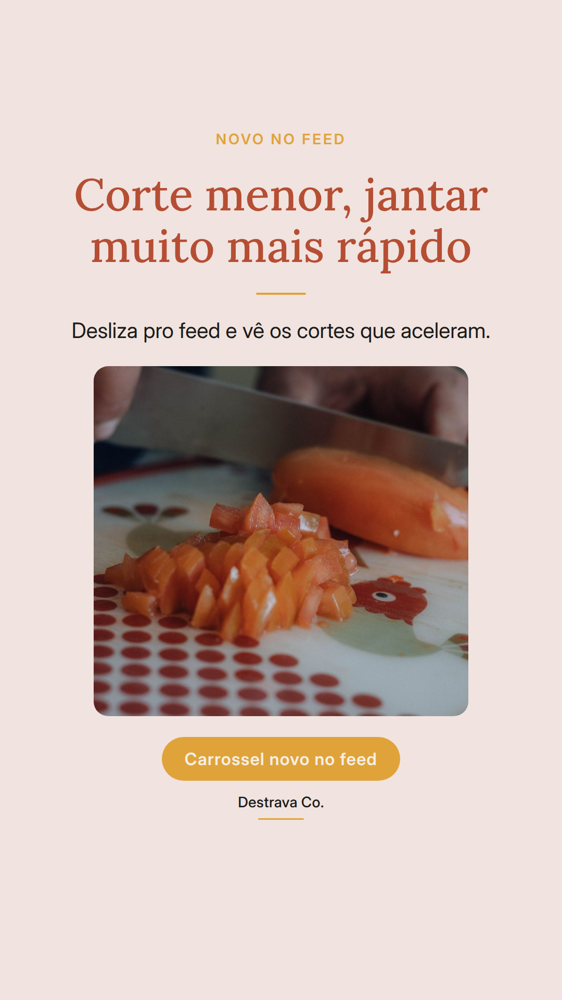
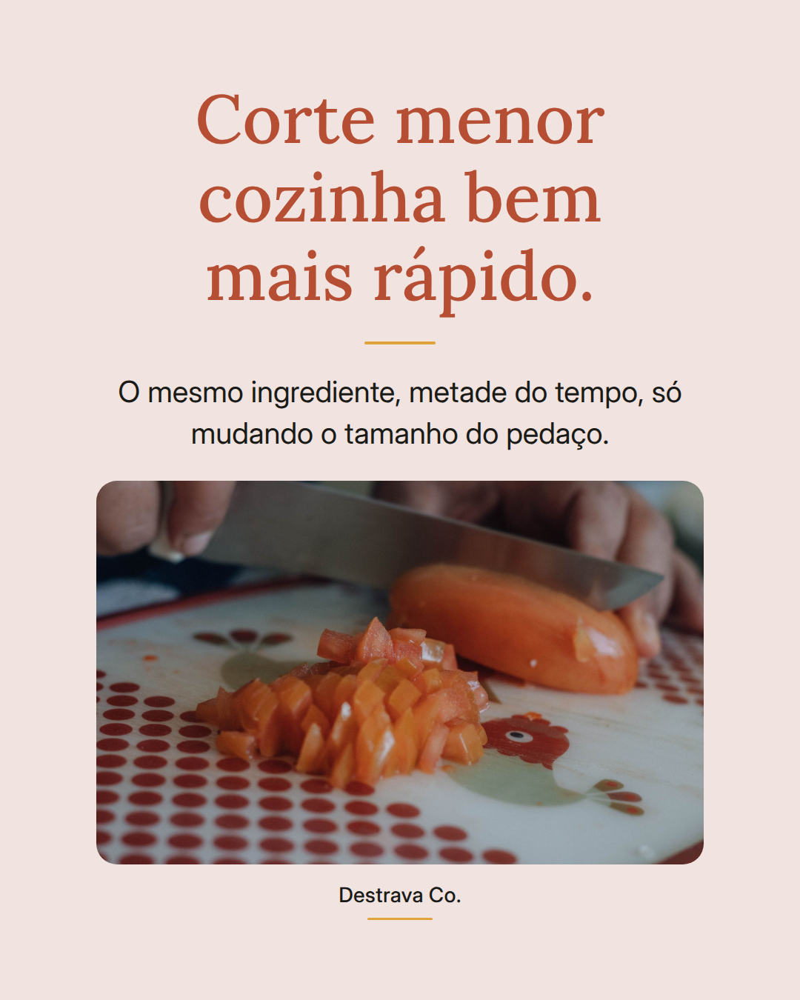
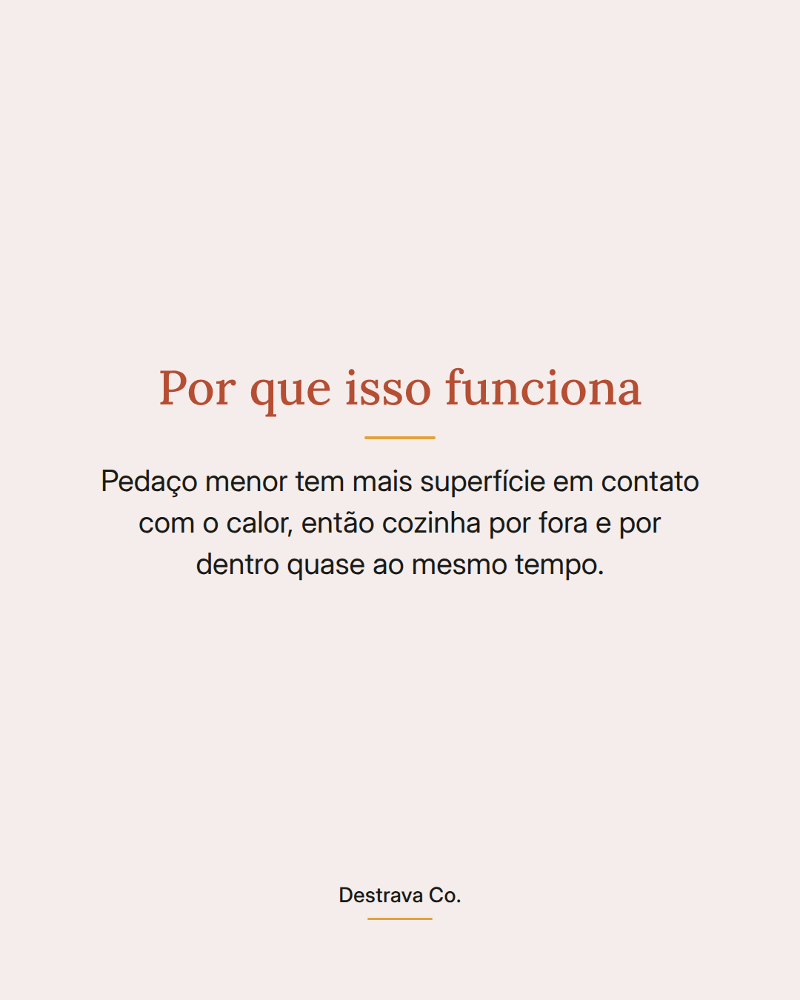
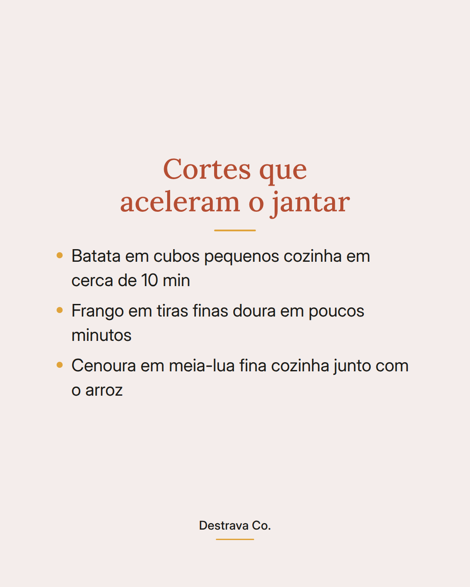
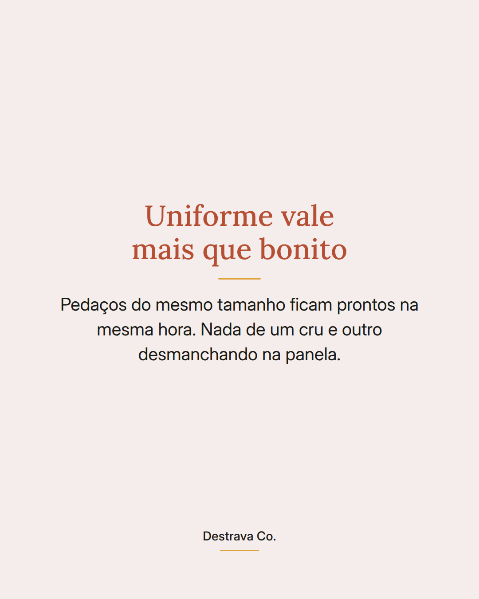
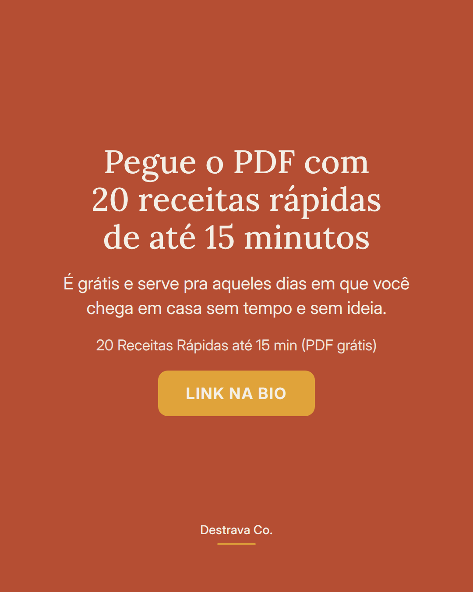

Corte menor cozinha mais rápido: é a mudança mais simples pra encurtar o jantar.
Muita gente acha que precisa de panela nova ou receita diferente. Na maioria das vezes, o que atrasa é o tamanho do pedaço. Batata inteira demora, batata em cubinho resolve enquanto o arroz termina.
Duas coisas ajudam: deixar os pedaços do mesmo tamanho, pra tudo ficar pronto junto, e fatiar carne e frango fininho, que dourar leva poucos minutos.
É comida de verdade, feita no tempo que você tem hoje.
Salva pra lembrar na correria e manda pra quem sempre chega em casa com fome e sem plano. Se quiser mais ideias prontas, o PDF com 20 receitas rápidas de até 15 minutos está esperando você.